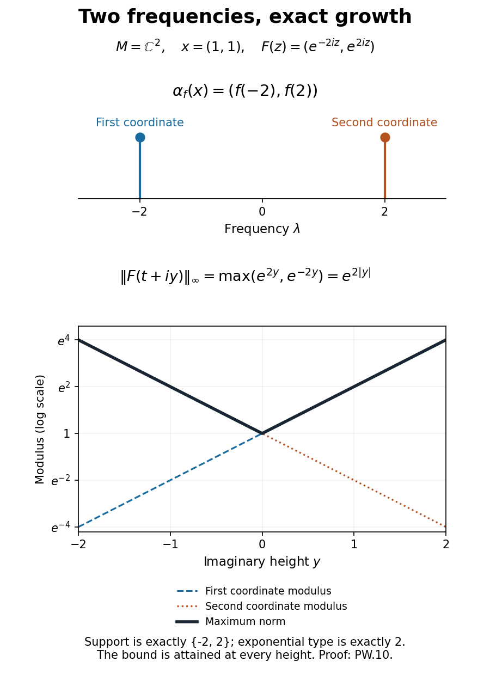

Entire orbits and compact Fourier support
An orbit extends to imaginary time with an exact exponential bound precisely when its frequencies lie in the corresponding compact interval. This lesson proves both directions, identifies the sharp bound, and then computes the imaginary-time endpoint of a uniformly continuous group.
Exact exponential type and Fourier support
Let \(M\) be a von Neumann algebra and \((\alpha_t)_{t\in\mathbb R}\) a group of surjective complex-linear isometries with pointwise sigma-weakly continuous orbits. AG-01 proves that each real map is normal. Multiplicativity is not assumed. Fix \(x\in M\) and \(a\geq0\).
Use the Fourier convention of RSF-01: \[ b_f(t)=\frac1{2\pi}\int_{\mathbb R}e^{-it\lambda}f(\lambda)\,d\lambda, \qquad \alpha_f(x)=\int_{\mathbb R}b_f(t)\alpha_t(x)\,dt. \tag{PW.1} \] The second integral is defined by predual pairings. For \(f\in C_c^\infty(\mathbb R)\), two integrations by parts show that \(b_f\) is integrable. RSF-01, using the Fourier inversion and product proofs in UW-03, proves normality, \(\alpha_f\alpha_g=\alpha_{fg}\), and \(\alpha_{\chi_n}(x)\to x\) sigma-weakly for \(\chi_n(\lambda)=\chi(\lambda/n)\), where \(\chi\in C_c^\infty\) and \(\chi(0)=1\). These are the previously proved Fourier inputs.
Theorem. The following are equivalent:
- The orbit has a norm-entire extension \(F:\mathbb C\to M\) with \(\|F(t+iy)\|\leq C e^{a|y|}\) for some finite \(C\).
- \(\alpha_f(x)=0\) for every \(f\in C_c^\infty(\mathbb R)\) whose support is disjoint from \([-a,a]\).
- The orbit has a norm-entire extension with the sharp bound \[ \|F(t+iy)\|\leq\|x\|e^{a|y|}\quad(t,y\in\mathbb R). \tag{PW.2} \]
Scalar analytic uniqueness and predual separation make the extension unique. Every finite closed horizontal strip is bounded, so its values agree with AG-01's closed-strip endpoints on their stated domains.
Growth implies support. Suppose condition 1 holds and \(\operatorname{supp}f\subset[b,B]\), where \(b>a\). Formula (PW.1) extends \(b_f\) to an entire scalar function. At \(t-is\), \(s\geq0\), its frequency exponential has absolute value \(e^{-s\lambda}\). Estimate directly for \(|t|\leq1\), and integrate twice by parts in \(\lambda\) for \(|t|>1\). The derivatives of \(e^{-s\lambda}f(\lambda)\) have \(L^1\) norms bounded by a constant times \((1+s)^2e^{-bs}\). Hence \[ \int_{\mathbb R}|b_f(t-is)|\,dt\leq C_f(1+s)^2e^{-bs}. \tag{PW.3} \] For \(\omega\in M_*\), apply the scalar Cauchy theorem to \(b_f(z)\omega(F(z))\) on the rectangle with vertices \(\pm R,\pm R-is\). For fixed \(s\), the vertical integrals vanish as \(R\to\infty\): integration by parts gives \(O(R^{-2})\) for the kernel uniformly on those sides, while \(F\) is uniformly bounded on the strip. The horizontal integrals converge absolutely. Thus \[ \begin{aligned} |\omega(\alpha_f(x))| &=\left|\int_{\mathbb R}b_f(t-is)\omega(F(t-is))\,dt\right|\\ &\leq\|\omega\|CC_f(1+s)^2e^{-(b-a)s}\longrightarrow0 . \end{aligned} \tag{PW.4} \] Predual separation gives \(\alpha_f(x)=0\). For support strictly to the left of \(-a\), shift upwards and use the reflected frequency variable. A compact support disjoint from \([-a,a]\) splits into these two parts; its positive distance from the interval makes both restrictions smooth. This proves condition 2. It is the general orbit version of UW-07's written contour argument and uses no product of distributions.
Support gives an entire extension. Fix \(b>a\) and choose \(\rho_b\in C_c^\infty((-b,b))\) equal to one on a neighborhood of \([-a,a]\), using the smooth cutoffs of BI-03. The function \((\rho_b-1)\chi_n\) has compact support disjoint from that interval. Condition 2 and the filter product law imply \[ \alpha_{\rho_b}\alpha_{\chi_n}(x)=\alpha_{\chi_n}(x). \tag{PW.5} \] Normality and the cutoff limit give \(\alpha_{\rho_b}(x)=x\). Put \[ F_b(z)=\int_{\mathbb R}b_{\rho_b}(t-z)\alpha_t(x)\,dt . \tag{PW.6} \] For real \(s\), change variables \(t=u+s\) and use normality of \(\alpha_s\) to obtain \(F_b(s)=\alpha_s\alpha_{\rho_b}(x)=\alpha_s(x)\).
The same integrations by parts, now with \(\operatorname{supp}\rho_b\subset[-b,b]\), give \[ \int_{\mathbb R}|b_{\rho_b}(t-s-iy)|\,dt \leq C_b(1+|y|)^2e^{b|y|}, \tag{PW.7} \] uniformly in the real coordinate \(s\). On every compact set of complex parameters, the kernels and their complex derivatives have a common integrable majorant: boundedness on a fixed real interval and the twice-integrated formula outside it suffice. Scalar differentiation under that majorant proves entire predual pairings. The locally uniform norm bound and AG-01's predual Cauchy-coefficient argument then prove norm-entireness.
All the \(F_b\) agree on the real line and hence everywhere. Write \(F\) for this common extension. For every \(c>a\), choose \(a<b<c\) in (PW.7) and absorb its quadratic factor into \(e^{(c-b)|y|}\). There is a finite constant \(C_c'\) such that \[ \|F(t+iy)\|\leq C_c'e^{c|y|}. \tag{PW.8} \] No uniformity of these constants as \(c\downarrow a\) is asserted.
The exact endpoint bound. A bounded scalar function \(g\), holomorphic in the upper half-plane and continuous on its real boundary, is bounded by its real-boundary supremum. Here is the needed proof. For \(d>0\), apply the maximum principle to \(g(z)/(1-idz)\) on an upper half-disc of radius \(R\). The denominator has no zero there, has modulus at least one on the diameter, and on the semicircle satisfies \[ |1-idz|^2=1+2d\operatorname{Im}z+d^2R^2\geq d^2R^2. \] The semicircle bound tends to zero as \(R\to\infty\). At each fixed \(z\), then let \(d\downarrow0\). Reflection proves the lower-half-plane assertion.
For \(\varepsilon>0\) and \(\omega\in M_*\), \[ g_\varepsilon(z)=e^{i(a+\varepsilon)z}\omega(F(z)) \] is bounded in the upper half-plane by (PW.8) with \(c=a+\varepsilon/2\). On the real boundary its modulus is at most \(\|\omega\|\|x\|\), since the real maps are isometries. The half-plane result yields \[ |\omega(F(t+iy))|\leq\|\omega\|\|x\|e^{(a+\varepsilon)y} \quad(y\geq0). \] Let \(\varepsilon\downarrow0\) and use predual norming. In the lower half-plane use \(e^{-i(a+\varepsilon)z}\) instead. This proves condition 3, which immediately implies condition 1. When \(a=0\), the entire extension is bounded and is constant by scalar Liouville and predual separation. \(\square\)
Distribution formulation. For a Schwartz function \(f\), define \(T_x(f)=\int b_f(t)\alpha_t(x)\,dt\). Direct estimation for \(|t|\leq1\), and two integrations by parts outside, give \[ \|T_x(f)\|\leq C_0\|x\| \bigl(\|f\|_{L^1}+\|f''\|_{L^1}\bigr). \tag{PW.9} \] The \(L^1\) norms are bounded by Schwartz seminorms: multiply the suprema of \((1+t^2)|f(t)|\) and \((1+t^2)|f''(t)|\) by \(\int(1+t^2)^{-1}dt\). Thus \(T_x\) is a continuous \(M\)-valued tempered distribution. In this normalization it is the frequency distribution of the bounded orbit. Its support is contained in \([-a,a]\) exactly when it vanishes on smooth compact tests supported off that interval, which is condition 2 by the definition of distributional support. Normal scalar pairings give the same criterion; predual separation recovers the vector statement.
Sharp example. On \(M=\mathbb C^2\) with maximum norm, set \[ \alpha_t(z_1,z_2)=(e^{-2it}z_1,e^{2it}z_2),\qquad x=(1,1). \] These are surjective complex-linear isometries, as allowed by the theorem. Their extension and filters are \[ F(z)=(e^{-2iz},e^{2iz}),\qquad \|F(t+iy)\|=e^{2|y|},\qquad \alpha_f(x)=(f(-2),f(2)). \tag{PW.10} \] Both endpoint frequencies occur, and the bound is attained at every height. No smaller support interval or smaller exponential type suffices.

Original illustration: OpenAI Codex (AI). The two coordinate atoms and three modulus curves are the exact example (PW.10); the lower axis uses a logarithmic scale. Reproducible source: render-exponential-type-sharpness.py.
Uniform continuity and the imaginary-time exponential
Assume additionally that \(\|\alpha_t-I\|\to0\) as \(t\to0\), in the operator norm on the Banach space \(M\). The group is then norm continuous at every real parameter. Choose \(h>0\) with \[ A_h=\frac1h\int_0^h\alpha_s\,ds,\qquad\|A_h-I\|<1. \tag{PW.11} \] This is a norm Riemann integral of operators. The geometric series for \((I-(I-A_h))^{-1}\) proves invertibility. The group law gives \[ \alpha_tA_h=\frac1h\int_t^{t+h}\alpha_s\,ds. \] Difference quotients converge in operator norm by continuity of the integrand. Therefore \[ \frac d{dt}\alpha_tA_h=\alpha_t\frac{\alpha_h-I}{h}. \] Multiplication by \(A_h^{-1}\) proves existence of the bounded generator: \[ D=\lim_{t\to0}\frac{\alpha_t-I}{t} =\frac{\alpha_h-I}{h}A_h^{-1}, \qquad \alpha_t'=\alpha_tD=D\alpha_t . \tag{PW.12} \] The operators commute since they are limits of linear combinations of the same commuting group. The norm-convergent exponential differentiates termwise on bounded parameter sets. Hence \(e^{-tD}\alpha_t\) has zero derivative and equals \(I\), proving \(\alpha_t=e^{tD}\).
Now \(z\mapsto e^{zD}x\) is norm-entire, and real isometry gives \[ \|e^{(t+iy)D}x\|=\|e^{iyD}x\| \leq e^{|y|\|D\|}\|x\|. \tag{PW.13} \] This is bounded on each finite closed horizontal strip, so AG-01 identifies its endpoint values. In particular, \[ D(\alpha_{-i})=M,\qquad \alpha_{-i}=e^{-iD}. \tag{PW.14} \] The formula includes the sign and the full domain without choosing an operator-logarithm branch. The expression \(\alpha_{-i}=i\log D\) is false: the identity group has \(D=0\) and \(\alpha_{-i}=I\), while \(\log0\) is undefined.
References and prerequisites
The source correspondence is the unnumbered discussion in M. Takesaki, Theory of Operator Algebras II, VIII.3, printed page 128. Equations (PW.1)–(PW.9) prove the frequency-support equivalence, and (PW.11)–(PW.14) give the full-domain exponential formula. The displayed logarithm identity in that discussion is corrected by (PW.14) and the identity-group example.
The written inputs are AG-01, RSF-01, UW-03, BI-02–03, and the scalar Cauchy, maximum-principle and Liouville proofs used by MA-08. The support proof constructs and estimates the tempered distribution explicitly; it does not assume a general Paley–Wiener theorem.